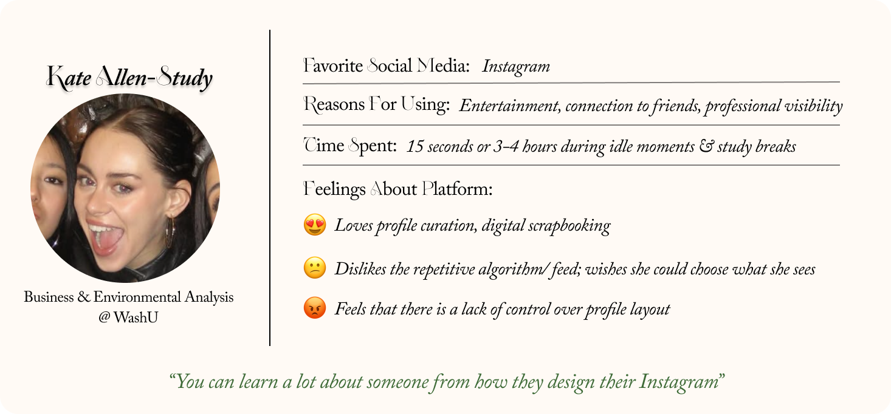
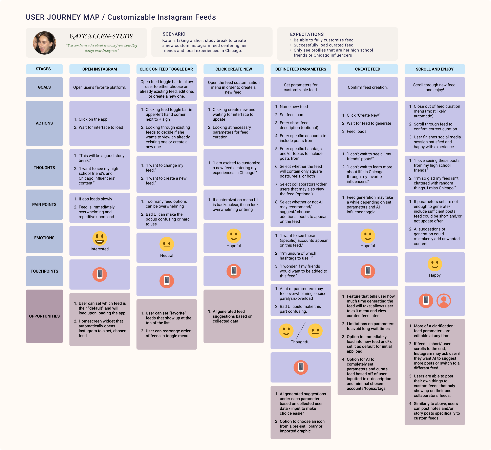
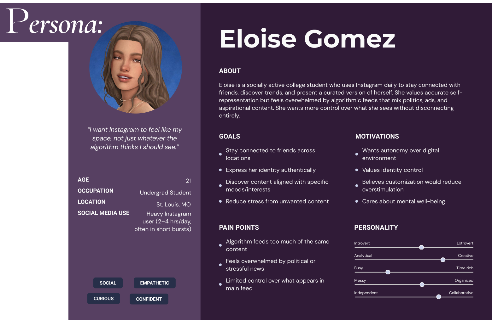
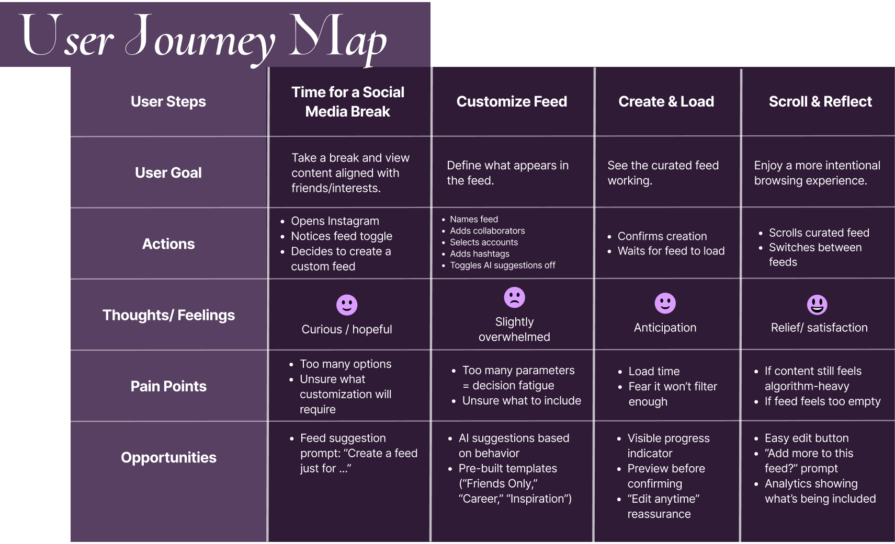
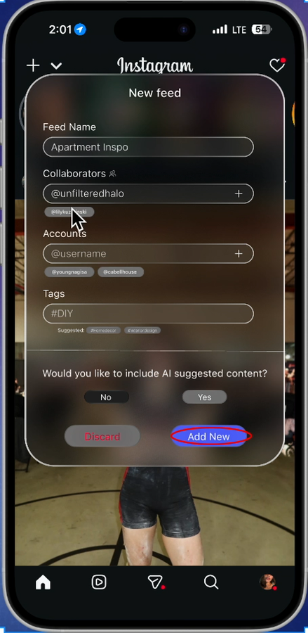

Instagram Feed Feature
Instagram Feed Customization: a UX research project exploring whether giving people more control over their social media feed can support their well-being.
The Short Version
Social media feeds promise connection, but they're built and controlled by algorithms, not by the people scrolling them. This project asks a simple question: if users had more say over what showed up in their feed, would that change how they felt about being there?
Context & Problem
This was completed as a class assignment for a UX research course, not a client or professional engagement. No real user data or production app access was involved: the research and prototype below reflect the assignment brief, built around one research question — would more options for customizing a social media space lead to better well-being for users?
Instagram was chosen as the focus because it was the platform used most by survey respondents and interviewees, and because its feed algorithm, not the user, currently decides most of what appears on screen.
Process
Rather than annotated interface screenshots, this section pulls from the research and reasoning behind the redesign:
What customization research says across other spaces
Secondary research looked at how customization functions in four other spaces: luxury consumer products, mental health apps, smartphone interfaces, and physical environments. Across all four, customization was consistently linked to greater autonomy, self-authenticity, and user satisfaction, all of which support well-being. But several studies also warned that too many choices create cognitive overload and can reduce engagement. The takeaway: customization works best when it's optional, low-effort, and balanced with some degree of system-driven personalization, rather than left entirely up to the user.
What the interview and survey turned up
A one-on-one interview and a ten-person survey (mostly women, 18–22, with Instagram as their primary platform) grounded the secondary research in how people actually feel. The interview subject, Kate Allen-Study, described Instagram as a kind of digital scrapbook she puts real effort into curating, while feeling frustrated by algorithm changes that reduced her control and surfaced repetitive or unwanted content. Survey respondents didn't consider having a social media presence especially important (2.4 out of 5), but felt neutral-to-positive about their own enjoyment of it (3.5) and cared a moderate amount about accurate self-representation and profile customization (3.6 for both). The two tracked together: respondents who cared more about accurate representation also put more effort into customizing their profile, and 7 of 10 said they'd made genuine connections through social media, often citing profiles that felt like “genuine, unfiltered whimsy” or “creative, funny, and unapologetically themselves.”


The core tension: control vs. overload
These findings shaped a persona, Eloise Gomez, a college student who wants Instagram to feel like her own space rather than whatever the algorithm decides to show her, and a user journey map of someone building a custom feed. Mapping that journey surfaced two competing risks: too few customization options would recreate the same lack of control users already disliked, while too many fields and decisions risked the cognitive overload the secondary research had warned about. That tension became the core design constraint: whatever got built needed to give users real control without turning feed creation into a chore.


Why an Instagram feature, not a new platform
Several directions were considered, including a fully separate customizable networking platform and a collaborative post-editing tool similar to FigJam. Both were set aside in favor of a more contained idea: a feature within Instagram itself that lets users build custom feeds, kept private or shared with others, without asking them to leave the app or learn a new one.
Final Solution
The prototype adds a feed toggle to Instagram's existing home screen, accessed through a small dropdown next to the current “+” icon, so it fits into an interface people already know rather than asking them to learn something new.

Building a new feed asks for only a few things: a name, and optionally specific accounts or hashtags to pull from, collaborators to share it with, and whether to let AI fill in additional suggested content. Feeds can be kept private or shared with other users, so a feed can work as a personal filter or as something built and used together with friends.

Once created, the feed sits alongside the default feed in the toggle menu and loads content matched to what the user defined. This design responds directly to what the research turned up: it gives users the control over their feed that they said they lacked, keeps the process of building that control optional and low-effort so it doesn't become its own source of overload, and includes an opt-in AI assist for anyone who wants curation without doing all the work of building a feed by hand.
Final walkthrough: real-time click-through
Opening the feed toggle
Creating a new feed
Outcome
This prototype was not formally user-tested, so there is no usability data to report. Informally, classmates and the original interview subject responded well to the idea. The hope behind this feature is to give social media users real control over what shows up in their feed, including the option to see only specific kinds of posts, similar to how Pinterest lets users narrow in on specific pins or themes the algorithm has identified they like. The feature also gives users a choice about whether AI helps fill their feed, rather than having that curation built into the algorithm by default.
Reflection
Balancing control against overload was the central design challenge of this project. The research made it clear that customization only supports well-being when it doesn't ask too much of the user, and that constraint shaped decisions throughout, from keeping the create-a-feed form short to making the AI assist optional rather than automatic.
This was a short, fun project that addressed a need I have as a social media user myself, and it felt like an appropriate direction for the scope of the class assignment. Looking ahead, I'd like to explore other ways to make Instagram profiles more customizable, such as letting users choose a background color for their feed, change the layout of their bio, or add decorations to their profile photo.